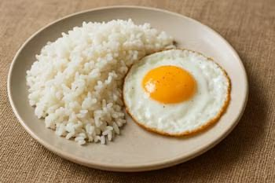
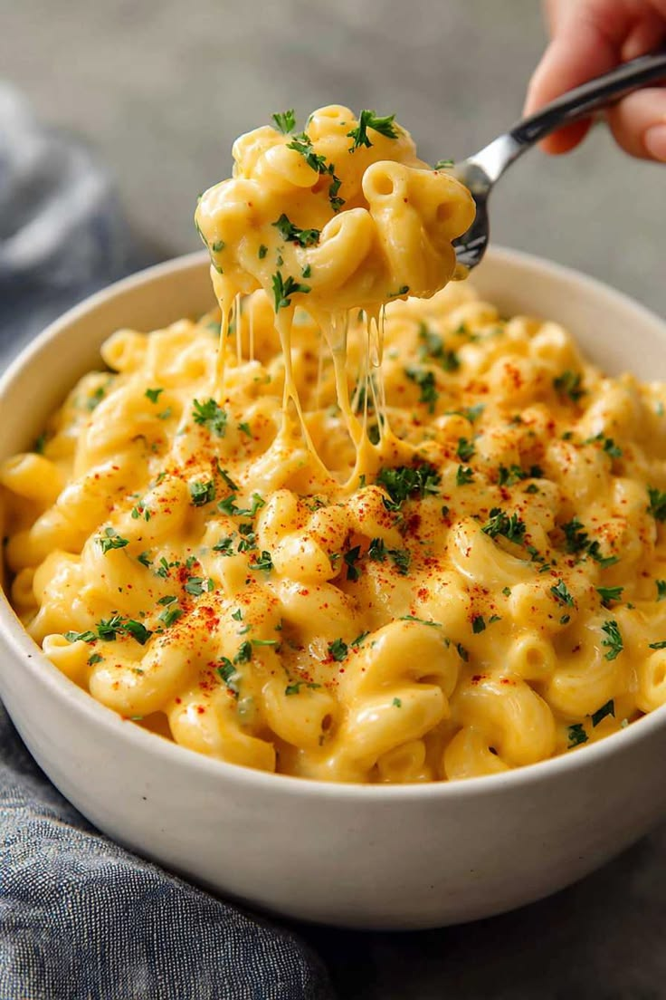
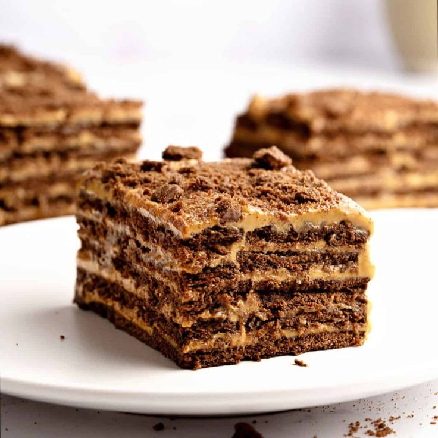

Bienvenido al rincón donde cocinar rico no cuesta trabajo...
Schnitzel
Una receta fácil para hacer schnitzel crujiente sin
complicaciones.
Ingredientes:
1 pechuga de pollo
1 huevo
Pan rallado
Sal y pimienta al gusto
Instrucciones:
Calienta el aceite en una sartén a fuego medio y espera a
que esté bien caliente antes de comenzar.
Extiende el pan rallado en un plato llano para facilitar el
empanizado.
Bate el huevo en un plato hondo hasta que la mezcla quede
uniforme.
Pasa la pechuga de pollo primero por el huevo batido y luego
cúbrela completamente con el pan rallado, presionando
ligeramente para que se adhiera bien.
Coloca con cuidado la pechuga empanizada en la sartén y
déjala cocinar sin moverla durante los primeros minutos para
lograr un empanizado bien crujiente.
Fríela entre 6 y 8 minutos por cada lado, o hasta que esté
dorada por fuera y completamente cocida por dentro.
Retírala, deja escurrir el exceso de aceite y sírvela
caliente.

Arroz con Huevo
El salvavidas de cualquier nevera. Si tienes arroz de ayer, ya
tienes medio almuerzo resuelto.
Ingredientes:
1 taza de arroz
2 tazas de agua
1 o 2 huevos
1 cucharada de aceite
Sal al gusto
Instrucciones:
Calienta un poco de aceite en una olla a fuego medio y deja
que tome temperatura.
Agrega el arroz y sofríelo durante 2 o 3 minutos,
revolviendo constantemente hasta que los granos se vean
ligeramente dorados.
Vierte las dos tazas de agua, añade una pizca de sal y
mezcla. Cuando empiece a hervir, continúa con el siguiente
paso.
Baja el fuego al mínimo, tapa la olla y deja cocinar entre
15 y 20 minutos, hasta que el arroz esté suave y haya
absorbido toda el agua.
Mientras el arroz termina de cocinarse, fríe los huevos en
una sartén al punto que más te guste: con la yema líquida o
bien cocidos.
Sirve el arroz recién hecho, coloca los huevos fritos encima
y acompaña con tu bebida favorita.

Mac and Cheese
Una receta clásica y cremosa que siempre resulta
reconfortante.
Ingredientes:
400 g de pasta tipo codo
50 g de mantequilla
40 g de harina de trigo
700 ml de leche entera
350 g de queso cheddar rallado
100 g de queso mozzarella
Condimentos: sal, pimienta negra y una pizca de nuez moscada
o pimentón dulce.
Instrucciones:
Hirve agua con sal en una olla. Agrega los coditos y
cocínalos al dente, siguiendo el tiempo del empaque menos un
minuto. Escurre y reserva.
En una cazuela a fuego medio, derrite la mantequilla. Agrega
la harina y revuelve constantemente por un minuto para que
se tueste.
Vierte la leche poco a poco (preferiblemente tibia) sin
dejar de batir. Cocina a fuego bajo hasta que la mezcla
espesa.
Apaga el fuego. Condimenta con sal, pimienta y nuez moscada.
Añade el queso cheddar rallado y mezcla vigorosamente hasta
que se derrita por completo.
Incorpora la pasta cocida a la salsa de queso y mezcla bien
para que se impregne de sabor.
Si deseas, puedes gratinar el mac and cheese en el horno a
180°C durante 10-15 minutos hasta que la superficie esté
dorada.
Chimichangas
Una tortilla rellena, bien doradita y crujiente por fuera, con
un interior lleno de sabor.
Ingredientes:
1 paquete de tortillas de tu preferencia
1 paquete de salchichas
1 paquete de queso mozzarella
1 bolsa de crema de leche
Sal y paprika
Instrucciones:
Calienta una sartén a fuego medio para que esté lista cuando
empieces a cocinar.
Corta las salchichas en rodajas o trozos pequeños.
Fríe las salchichas durante unos minutos hasta que queden
doraditas.
Agrega la crema de leche, una pizca de sal, la paprika y el
queso. Mezcla hasta obtener un relleno cremoso.
Coloca una porción del relleno en el centro de cada tortilla
y dóblala asegurando bien las esquinas.
Fríe las chimichangas por ambos lados hasta que la tortilla
esté crujiente y dorada.
Escurre sobre papel absorbente y sírvelas calientes.

Chocotorta
Tan fácil de hacer que el mayor esfuerzo es esperar a que se
enfríe en la nevera.
Ingredientes:
400g a 500g de arequipe
500g de queso crema
3 a 4 paquetes de galletas de chocolate
1 taza de leche o café suave
Instrucciones:
En un recipiente, mezcla el arequipe y el queso crema hasta
integrarlos bien.
Coloca la leche o café suave en un plato hondo.
Pasa las galletas de chocolate rápidamente por el líquido
para que se humedezcan sin romperse.
En un molde, coloca una capa de galletas humedecidas.
Agrega una capa de la mezcla de arequipe y queso crema sobre
las galletas.
Alterna capas de galletas y crema. La última capa debe ser
de crema.
Refrigera por lo menos durante 3 a 6 horas antes de servir.